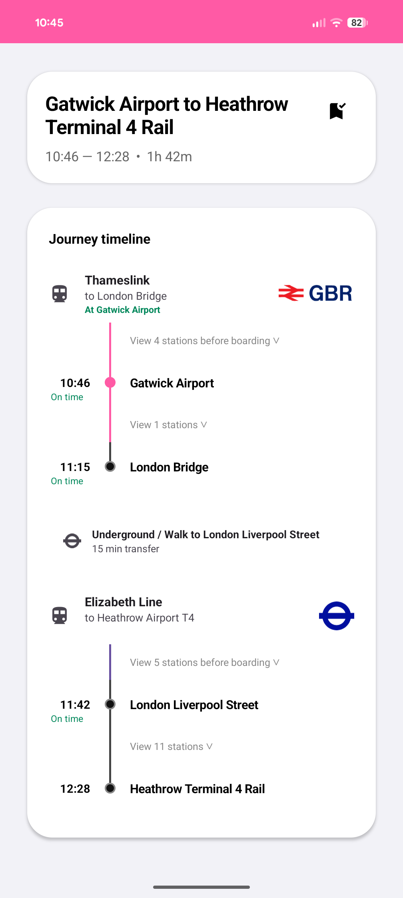
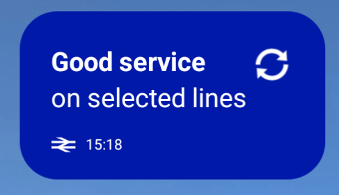

Everything you need for your commute
CallingPoint connects directly to the National Rail Data Portal to provide the most accurate, up-to-the-minute data available.

Live Tracking
Instantly check live departure times, platforms, and train operators. Pin your frequented stations to the dashboard.

Smart Routing
Find direct trains, calculate multi-change routes, and seamlessly map out cross-city London transfers.

Proactive Alerts
Add the CallingPoint widget to your home screen for background updates on engineering works and active incidents.